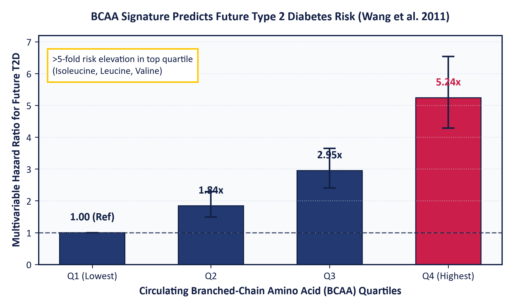
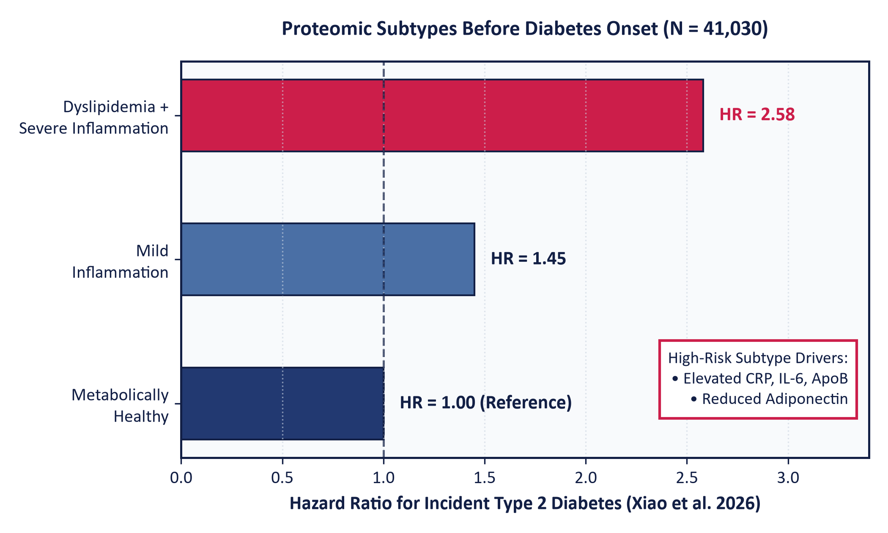
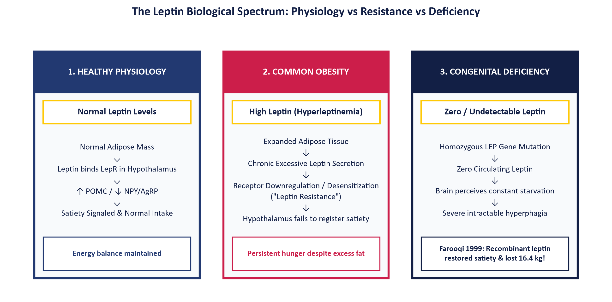
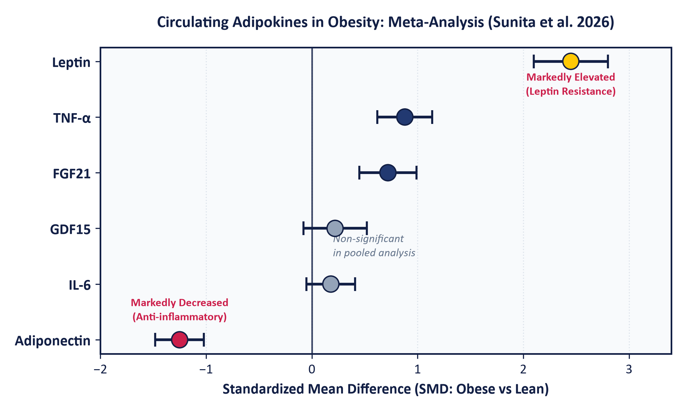
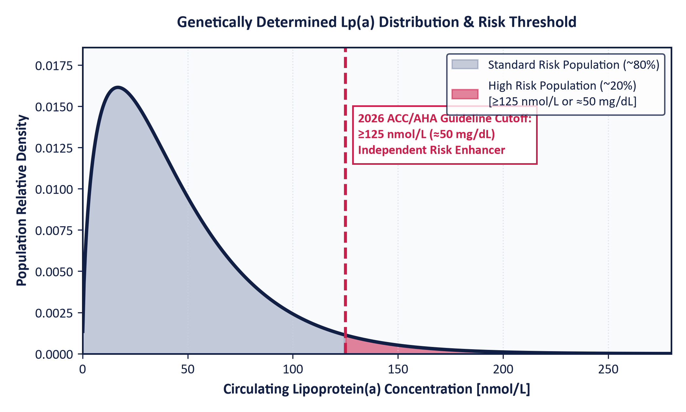
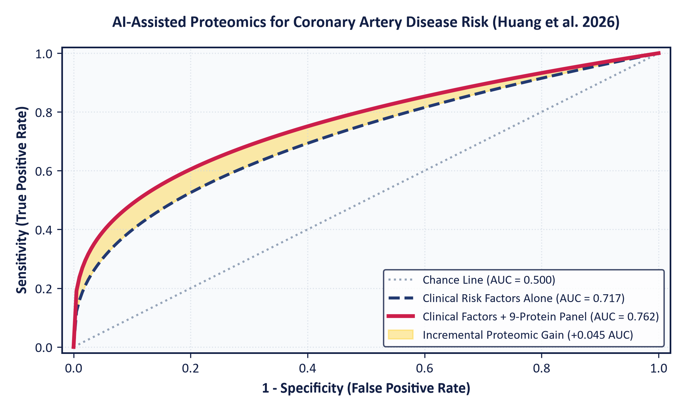

A creative, interactive curriculum translating emerging metabolomics, non-coding RNAs, adipokines, and proteomics from basic laboratory science into 2025–2026 clinical guidelines.
Before evaluating emerging molecular signatures, clinicians and scientists must ground their reasoning in strict regulatory and biological taxonomy.
"A defined characteristic that is measured as an indicator of normal biological processes, pathogenic processes, or responses to an exposure or intervention."— FDA-NIH Biomarker Working Group
THE CARDINAL TEACHING DISTINCTION:
| BEST Category | Clinical Intended Purpose | Representative Landmark Example |
|---|---|---|
| Diagnostic | Detects or confirms the presence of disease | HbA1c ≥ 6.5% for Diabetes Mellitus |
| Susceptibility/Risk | Identifies potential to develop disease in healthy persons | Lp(a) ≥ 125 nmol/L for future ASCVD |
| Prognostic | Forecasts likelihood of disease recurrence or progression | NT-proBNP in Chronic Heart Failure |
| Predictive | Identifies differential response to a specific drug | CYP2C19 clopidogrel resistance |
| Monitoring | Assesses serial status of disease or drug effect | CGM Time-in-Range (TIR 70–180 mg/dL) |
| Pharmacodynamic | Demonstrates biological target engagement | LDL-C reduction on Statin / PCSK9 inhibitor |
| Safety | Detects potential therapeutic toxicity or adverse effect | Serum ALT / AST elevation during drug therapy |
We begin with Diabetes Mellitus. Review the established 2026 ADA diagnostic criteria, discover the biological limitations of glycation markers, explore the molecular actions of Branched-Chain Amino Acids (BCAAs) and endothelial miR-126, and examine cutting-edge pre-disease proteomic subtyping.
Diabetes mellitus encompasses metabolic disorders marked by chronic hyperglycemia resulting from defects in insulin secretion (pancreatic beta-cell loss), insulin action (peripheral insulin resistance in skeletal muscle, liver, and fat), or both. Long-term glucotoxicity and lipotoxicity stimulate advanced glycation end-products (AGEs), protein kinase C (PKC) activation, sorbitol accumulation, and endothelial oxidative stress, culminating in microvascular (retinopathy, nephropathy, neuropathy) and macrovascular (CAD, stroke, PAD) catastrophe.
| Diagnostic Test | 2026 ADA Cutoff Threshold | Biological Mechanism & Physiological Significance | Confirmatory Requirement |
|---|---|---|---|
| Fasting Plasma Glucose (FPG) | ≥ 126 mg/dL (7.0 mmol/L) | Reflects overnight basal hepatic gluconeogenesis and glycogenolysis following ≥ 8 hours of fasting without caloric intake. Evaluates basal hepatic insulin resistance. | Mandatory repeat testing on a subsequent day if the patient is asymptomatic. |
| 2-Hour OGTT (75g Load) | ≥ 200 mg/dL (11.1 mmol/L) | Evaluates postprandial glucose clearance, peripheral insulin-stimulated glucose uptake in skeletal muscle, and early-phase beta-cell insulin secretion. | Mandatory repeat testing on a subsequent day if the patient is asymptomatic. |
| Glycated Hemoglobin (HbA1c) | ≥ 6.5% (48 mmol/mol) | Reflects non-enzymatic ketoamine glycation of the N-terminal valine of hemoglobin beta chains via an Amadori rearrangement over the 120-day erythrocyte lifespan. | Mandatory repeat testing; must use NGSP-certified assay standardized to DCCT. |
| Random Plasma Glucose (RPG) | ≥ 200 mg/dL (11.1 mmol/L) | Detects gross systemic hyperglycemia in patients presenting with classic catabolic symptoms (polyuria, polydipsia, unexplained weight loss) or hyperglycemic crisis. | Does NOT require confirmatory repeat testing if classic symptoms are present. |
HbA1c assumes a normal 120-day erythrocyte lifespan. Any condition that alters red blood cell survival severely invalidates the result!
FPG reflects a single static point in time, measuring overnight hepatic gluconeogenesis but completely missing postprandial glucose excursions.
Traditional diagnostic tests detect diabetes only after beta-cell failure has advanced to severe, irreversible levels.
Biochemical Mechanism: Premature erythrocyte destruction significantly shortens average circulating RBC lifespan from ~120 days down to 30–60 days. Hemoglobin beta chains have far less ambient time to undergo non-enzymatic ketoamine glycation. Severe hyperglycemia will be dangerously masked as a 'normal' or 'low' HbA1c!
Recommended Clinical Action: Order Glycated Albumin (GA) or Continuous Glucose Monitoring (CGM).
Essential nutrient-signaling amino acids that uncover insulin resistance a decade before glucose decompensation.

Standardized fasting plasma metabolomic concentration ranges established in the Framingham Offspring Study (N = 2,422 initially normoglycemic adults followed longitudinally for 12 years). Click any quartile row below to simulate its molecular signaling status and clinical risk in the calculator above:
| Quartile | Total Fasting Plasma BCAAs (Leu + Ile + Val) |
Fasting Valine (μM) |
Fasting Leucine (μM) |
Fasting Isoleucine (μM) |
Multivariable HR (Wang et al. 2011) |
|---|---|---|---|---|---|
|
Q1 (Lowest 25%)
Optimal / Baseline
|
< 350 μM
(typically 290–350 μM)
|
< 195 μM | < 105 μM | < 55 μM | 1.00x Reference (~2.1% risk) |
|
Q2 (25%–50%)
Low-Normal
|
350–405 μM | 195–225 μM | 105–125 μM | 55–65 μM | 1.84x (95% CI: 0.98–3.46) |
|
Q3 (50%–75%)
Moderate Elevation
|
405–465 μM | 225–255 μM | 125–145 μM | 65–78 μM | 2.95x (95% CI: 1.54–5.67) |
|
Q4 (Highest 25%)
High Risk (>5x HR)
|
> 465 μM
(typically 470–600+ μM)
|
> 255 μM | > 145 μM | > 78 μM | 5.24x (95% CI: 2.10–13.11) |

Xie et al. (2025 Diabetes Care): Adding a 6-protein panel to clinical models in 21,898 UK Biobank subjects gained +0.014 in external validation C-index. Demonstrates discrimination, but sparks cost-effectiveness debate.
Xiao et al. (2026 DOM) Subtyping: Analyzed 41,030 pre-disease individuals and uncovered 3 molecular phenotypes:
Moving to our second domain: Obesity. Experience the 2025 Lancet Commission shift from BMI to Clinical Obesity, master the endocrine secretome of adipose tissue, explore the molecular biology of Leptin and the Obesity Paradox, and review the 2026 adipokines meta-analysis.
Ensure students understand the endocrine identity of leptin before discussing leptin resistance or obesity pharmacotherapy.


Moving to our third domain: Cardiovascular Diseases. Understand atherogenesis, master the 2026 ACC/AHA guidelines on Lipoprotein(a), explore the 1:1 stoichiometry of ApoB discordance, examine GlycA NMR spectroscopy, and inspect somatic CHIP mutations and gut TMAO.
Atherosclerosis begins when circulating apolipoprotein B-containing lipoproteins cross a compromised vascular endothelium and become trapped within the subendothelial extracellular matrix. Retained lipoproteins undergo oxidation (OxLDL), triggering monocyte adhesion and scavenger receptor uptake (CD36, SR-A1) to form lipid-laden foam cells. Progressive necrosis forms an unstable lipid core covered by a fragile fibrous cap. Plaque rupture exposes thrombogenic core material to platelets and clotting factors, precipitating occlusive intraluminal thrombosis.


Direct access to all interactive simulations. Jump directly into any calculator to demonstrate physiological pathways or test diagnostic thresholds during lecture.
Input FPG, HbA1c, OGTT, or symptoms to evaluate diagnostic verdicts and confirmatory rules.
Open Tester →Simulate mTORC1 hyperactivation, IRS-1 serine phosphorylation, and Wang 2011 hazard ratios.
Open Calculator →Differentiate Preclinical from Clinical Obesity using organ damage toggles and athlete personas.
Open Staging Tool →Evaluate 2026 ACC/AHA risk enhancer cutoffs (≥125 nmol/L) and small-dense LDL ApoB discordance.
Open CVD Tools →Translating a candidate molecule from an academic discovery into an approved clinical test kit requires five rigorous phases.
| Platform Technology | Target Biomarkers | Methodological Principle | Primary Advantages | Practical Limitations |
|---|---|---|---|---|
| Automated Immunoassays (ELISA / ECLIA) | Leptin, Adiponectin, Troponin, hs-CRP, NT-proBNP | Antigen-antibody binding coupled to enzymatic or electrochemiluminescent signal generation. | High throughput, fully automated, rapid turnaround (< 1 hr), low cost. | Cross-reactivity, hook effect at high concentrations, limited multiplexing. |
| LC-MS/MS (Tandem Mass Spec) | BCAAs, Ceramides, TMAO, Steroid hormones | Chromatographic retention separation followed by molecular ionization and m/z fragmentation. | Gold standard analytical specificity, absolute quantitation, simultaneous multiplexing. | High capital cost, technical operator skill required, manual extraction. |
| RT-qPCR & Digital Droplet PCR | Circulating microRNAs (miR-126), mRNA transcripts | Reverse transcription followed by real-time fluorophore tracking of cDNA amplification. | Extreme analytical sensitivity for low-abundance circulating nucleic acids. | Pre-analytical RNA degradation, lack of standardized reference genes. |
| Proton NMR Spectroscopy | GlycA, Lipoprotein particle subfractions, Ceramides | Detects resonance frequencies of atomic nuclei in a high-strength magnetic field. | Direct quantitation without chemical extraction; highly reproducible. | Lower sensitivity than mass spectrometry; requires specialized cryogenic facility. |
| Targeted Next-Gen Sequencing (NGS) | CHIP somatic mutations (TET2, DNMT3A) | Massively parallel sequencing of targeted genomic DNA fragments from leukocytes. | Detects ultra-rare clonal mutations down to 1% variant allele frequency. | High sequencing turnaround time, intensive bioinformatics pipeline. |
Live interactive database indexing 27 traditional and novel biomarkers across Diabetes, Obesity, and CVD with biological identities and official guideline statuses.
| Biomarker Name | Domain | Biological Nature / Class | Physiological / Molecular Action | Current Guideline & Clinical Status |
|---|
Test clinical reasoning against official 2025–2026 guidelines. Receive instant visual feedback and comprehensive evidence-based rationales.
"What unique biological mechanism does this biomarker reveal that existing tests cannot measure?"
Does it capture an upstream molecular defect before end-organ tissue necrosis occurs (e.g. BCAAs reflecting amino acid catabolic block; miR-126 reflecting endothelial injury)? Is it causal or merely a bystander epiphenomenon?
"Does measuring this molecule improve diagnostic accuracy, risk discrimination, or patient health outcomes?"
Does it demonstrate significant Net Reclassification Improvement (NRI) beyond traditional risk scores (e.g. ApoB discordance in hypertriglyceridemia; Lp(a) lifetime genetic risk)? Does it alter clinical therapy?
"Is the test analytically standardized, reproducible, and cost-effective for health systems?"
High-throughput clinical lab feasibility (CV < 10%, international reference standards, unambiguous reference intervals). An expensive $1,000 multi-protein panel that provides a modest 0.014 C-index gain cannot displace routine clinical risk calculators!
Full academic bibliography linking every threshold, molecular mechanism, and landmark trial to its published DOI.